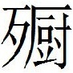

秦一
鮑本 秦：蘇、張說，外自弘農故關以西，京兆、扶風、馮翊、北地、上郡、西河、安定、天水、隴西皆秦地。南有巴、蜀、廣漢、犍為、武都，西有金城、武威、張掖、酒泉、燉煌，又西南有牂牁、越嶲、益州，皆屬焉。
衛鞅亡魏入秦
衛鞅〔一〕 亡魏入秦〔二〕 ，孝公以為相，封之於商〔三〕 ，號曰商君。商君治秦，法令至行〔四〕 ，公平無私，罰不諱強大〔五〕 ，賞不私親近〔六〕 ，法及太子〔七〕 ，黥劓其傅〔八〕 。期年之後，道不拾遺〔九〕 ，民不妄取〔一〇〕 ，兵革〔一一〕 大強，諸侯畏懼。然刻深寡恩〔一二〕 ，特以強服之耳。
〔一〕 鮑本 衛之庶孽公子，姓公孫氏。
〔二〕 姚本 衛鞅，衛公子叔痤之子也。痤仕魏，相惠王。痤病，惠王視之曰，「若疾不諱，誰可與為國者」？痤曰，「臣庶子鞅可也」。王不聽。又曰，「王若不能用，請殺之，無令他國得用也」。鞅由是亡奔秦，秦孝公封之於商，曰商鞅。衛公之後孫也，或曰公孫鞅也。鮑本 鞅事魏相公叔痤為庶子，見魏策 。正曰：此據史 。愚謂，公孫，衛之公孫也。庶孽公子，恐非。蓋因為中庶子而生此文。
〔三〕 鮑本 屬弘農。補曰：盧藏用後語 注，今商州上洛之地。又見後章注。
〔四〕 姚本 至，猶大也。鮑本 至，猶極。
〔五〕 桃本諱，猶辟也。詩 云，仲山甫不辟強禦，不侮鰥寡。此其一隅也。鮑本 諱，猶避也。強宗大族。
〔六〕 姚本 私，猶曲也。
〔七〕 姚本 太子卒為惠王。
〔八〕 姚本 太子犯法，刑之不赦，故曰「法及太子」，并罪其傅。刻其顙，以墨實其中，曰黥；截其鼻，曰劓也。鮑本 墨涅其顙，曰黥；截鼻，曰劓。太子犯法，鞅曰，「法之不行，自上犯之。太子，君嗣也，不可刑，刑其傅公子虔，黥其師公孫賈」。
〔九〕 姚本 遺物在道，不敢拾也。
〔一〇〕 姚本 民非其物，不敢取也。
〔一一〕 姚本 革，猶甲也。鮑本 革，甲也，以革為札。
〔一二〕 姚本 刻，急也；寡，少也；深，重也。言少恩仁也。鮑本 刻，猶深也。刻金木者，有深而已。
孝公行之〔一〕 八年，疾且不起，欲傳〔二〕 商君〔三〕 ，辭不受。孝公已死，惠王代後〔四〕 ，蒞政有頃〔五〕 ，商君告歸〔六〕 。
〔一〕 姚本 一本下有「十」字。
〔二〕 姚本 劉作「欲傅」。
〔三〕 姚本 傳，猶禪也。「傳」，或作「傅」也。鮑本 傳位與之。
〔四〕 姚本 惠王，孝公太子也。
〔五〕 姚本 蒞，臨也。有頃，言未久。鮑本 蒞，臨也。集韻 ，頃，少選。
〔六〕 姚本 懼惠王誅之，欲還歸魏也。鮑本 懼誅歸商。
人說惠王曰：「大臣太重者國危，左右太親者身〔一〕 危。今秦婦人嬰兒〔二〕 皆言商君之法，莫言大王之法〔三〕 。是商君反為主，大王更〔四〕 為臣也。且夫商君，固大王仇讎也〔五〕 ，願大王圖之〔六〕 。」商君歸還〔七〕 ，惠王車裂之，而秦人不憐〔八〕 。
〔一〕 鮑本 君之身。
〔二〕 鮑本 集韻 ，女曰嬰，男曰兒。補曰：釋名 ，人始生曰嬰。嬰，胸前也。投之胸前乳養，故曰嬰。
〔三〕 姚本 莫，無也。
〔四〕 鮑本 補曰：更，平聲。
〔五〕 鮑本 「王」下有「之」字。
〔六〕 姚本 圖，謀也。
〔七〕 鮑本 時自商欲歸魏，不得，故還秦。
〔八〕 姚本 商君懼誅，欲之魏，商人禁之曰，「商君之法急」。不得出，窮而還。一曰，魏以其譎公子卬而沒其軍，魏人怨而不納。故（曾下有「還而」字）惠王車裂之也。鮑本 無念之者。
蘇秦始將連橫
蘇秦始將連橫〔一〕 說秦惠王曰：「大王之國，西有巴、蜀、漢中之利〔二〕 ，北有胡貉、代〔三〕 馬之用〔四〕 ，南有巫山〔五〕 、黔中之限〔六〕 ，東有肴、函之固〔七〕 。田肥美，民殷富〔八〕 ，戰車萬乘，奮擊百萬〔九〕 ，沃野千里〔一〇〕 ，蓄積饒多，地勢形便〔一一〕 ，此所謂天府〔一二〕 ，天下之雄〔一三〕 國也。以大王之賢，士民之眾，車騎之用〔一四〕 ，兵法之教〔一五〕 ，可以并諸侯，吞天下〔一六〕 ，稱帝而治。願大王少留意，臣請奏其效〔一七〕 。」
〔一〕 姚本 合關東從，通之於秦，故曰連橫者也。鮑本 文穎曰，關東為從，西為橫。孟康曰，南北為從，東西為橫。瓚曰，以利合曰從，以威勢相脅曰橫。正曰：高注，連關中之為橫，合關東之為從。大事記 取。
〔二〕 姚本 利，饒也。鮑本 三郡並屬益州。
〔三〕 鮑本 胡，樓煩、林胡之類。集韻 ，貉似狐。代，幽州郡。
〔四〕 姚本 用，用武也。
〔五〕 鮑本 在南郡巫。補曰：正義 云，夔州巫山縣。
〔六〕 姚本 皆有塞險要也，故曰「之限」也。鮑本 黔，故楚地。秦地距此二郡耳，故言「限」。秦昭三十年始定為黔中郡，後為武陵郡。見後志 。補曰：大事記 ，今黔、辰、施、元等州。正曰：高注，皆有塞險，故謂「之限」。
〔七〕 姚本 肴，在澠池西。函關，舊在弘農城北門外，今在新安東。固，牢堅，難攻易守也。鮑本 始皇紀 注，殽，二殽；函，函關也。在弘農。補曰：左氏 ，殽有二陵。杜注，在澠池縣西。函，見周策 。
〔八〕 鮑本 殷，盛也。
〔九〕 鮑本 士之能奮擊者。
〔一〇〕 姚本 關中沃野千里，故田美民富。鮑本 沃，言其肥潤。
〔一一〕 姚本 攻之不可得，守之不可壞，故曰形便也。鮑本 地勢與形便於攻守。
〔一二〕 姚本 府，聚也。鮑本 言蓄聚之富，非人力也。
〔一三〕 鮑本 物之雄者強。
〔一四〕 鮑本 騎士之便馬者。
〔一五〕 姚本 教，習也。
〔一六〕 姚本 吞，滅也。
〔一七〕 姚本 奏，事。效，驗也。鮑本 奏，進。效，功也。
秦王曰：「寡人聞之，毛羽不豐滿者不可以高飛，文章〔一〕 不成者不可以誅罰〔二〕 ，道德不厚者不可以使民〔三〕 ，政教不順〔四〕 者不可以煩大臣〔五〕 。今先生儼然不遠千里而庭教之，願以異日〔六〕 。」
〔一〕 鮑本 文章，法令也。
〔二〕 姚本 文章，旌旟文章。青與赤謂之文，赤與白謂之章也。
〔三〕 姚本 厚，猶大也。
〔四〕 鮑本 逆人之心。
〔五〕 姚本 煩，勞也。鮑本 逆人心，則行之難，故大臣勞。
〔六〕 姚本 儼然，矜莊貌。不以千里之道為遠而來在秦庭，寡人願以他日敬承之也。鮑本 教之於廣庭。異，猶他也。俟成順然後承教，以此知為惠王初。補曰：史 ，時方誅商鞅，疾辯士弗用。
蘇秦曰：「臣固疑大王之不能用也。昔者神農伐補遂〔一〕 ，黃帝伐涿鹿而禽蚩尤〔二〕 ，堯伐驩兜〔三〕 ，舜伐三苗〔四〕 ，禹伐共工〔五〕 ，湯伐有夏，文王伐崇，武王伐紂〔六〕 ，齊桓任戰而伯天下〔七〕 。由此觀之，惡有不戰者乎〔八〕 ？古者使車轂擊馳〔九〕 ，言語相結〔一〇〕 ，天下為一〔一一〕 ；約從連橫，兵革不藏；〔一二〕 文士並飭〔一三〕 ，諸侯亂惑〔一四〕 ；萬端俱起，不可勝理〔一五〕 ；科條〔一六〕 既備，民多偽態；書策稠濁〔一七〕 ，百姓不足；上下相愁，民無所聊〔一八〕 ；明言章理，兵甲愈起〔一九〕 ；辯言偉服，戰攻不息〔二〇〕 ；繁稱文辭〔二一〕 ，天下不治；〔二二〕 舌弊耳聾，不見成功；行義約信，天下不親〔二三〕 。於是，乃廢文任武，厚養死士〔二四〕 ，綴甲厲兵，效勝於戰場〔二五〕 。夫徒處而致利，安坐而廣地〔二六〕 ，雖古五帝、三王、五伯〔二七〕 ，明主賢君，常欲坐而致之，其勢〔二八〕 不能，故以戰續之。〔二九〕 寬則兩軍相攻，迫則杖戟相橦〔三〇〕 ，然後可建大功〔三一〕 。是故兵勝於外，義強於內〔三二〕 ；威立於上，民服於下。今欲并天下，凌萬乘，詘敵國〔三三〕 ，制海內，子元元〔三四〕 ，臣諸侯〔三五〕 ，非兵不可〔三六〕 ！今之嗣主〔三七〕 ，忽於至道，皆惛〔三八〕 於教，亂於治，迷於言，或於語，沈於辯，溺於辭〔三九〕 。以此論之，王固不能行也〔四〇〕 。」
〔一〕 姚本 神農，炎帝號也，少典之子也。補遂，國名也。續：後語 ，輔遂。
〔二〕 姚本 蚩尤，九黎民之君子（子，劉、錢作好兵）也。鮑本 涿鹿，屬上谷。蚩尤，九黎氏之後，事見史。
〔三〕 姚本 翼善傳聖曰「堯」。鮑本 書止言憂之，豈嘗伐之而不服邪？正曰：書，放驤兜。又堯伐驩兜，禹伐共工，見荀子 。此游士之辭。下言五帝、三王，不能坐而致地，故以戰續之，此不過欲售其攻戰之說耳。凡戰國言帝王事，類如此，皆不足辨。後放此。
〔四〕 姚本 仁聖盛明曰「舜」。驩兜、三苗皆國名。鮑本 國名，縉雲氏之後。正曰：事見書，不必泛引。
〔五〕 姚本 共工，官名也，霸於水火之間，任知訓（一無訓字）刑之後子孫也。鮑本 伐，乃流之。
〔六〕 姚本 夏桀為無道，故成湯伐之。崇侯虎為紂卿士，道紂為惡，故文王伐之。紂淫虐，故武王伐之。
〔七〕 姚本 齊桓公小白，僖公之子也。用兵戰而尚仁義，師諸侯朝天子，故曰「伯天下」。鮑本 任，猶用也。作內政，寄軍令是也。
〔八〕 姚本 惡，安也。
〔九〕 鮑本 轂，輻所湊也。相擊而馳，言其眾。補曰：轂擊，說見齊策 。
〔一〇〕 姚本 錢、劉本無「語」字。鮑本 約親也。補曰：後語 注，結，音吉，此古韻協也。下文悉然橫，黃；態，替；濁，

玉反；聊，留；服，蒲北反；信，新；兵，聊莛反。〔一一〕 姚本 擊一也。兵車之轂比相當，馳傳言語相約結，使天下知同為一。
〔一二〕 姚本 藏，戢也。
〔一三〕 姚本 一作「飭」。餝，巧也。鮑本 文，謂辨也。「餝」，「飭」同。
〔一四〕 姚本 惑，疑也。
〔一五〕 姚本 理，治也。
〔一六〕 鮑本 科，程也。集韻 ，條，件也。
〔一七〕 姚本 稠，多。濁，亂也。鮑本 策，簡也，大事書之。稠，多也，言有司文書多，閱者昏亂。
〔一八〕 姚本 上下，君臣也。刑罰失中故相愁。愁（錢、劉作「愁怨」）則民無所聊賴者也。鮑本 集韻 ，聊，賴也。
〔一九〕 姚本 愈，益也。鮑本 文章，法理。正曰：章亦明也。謂明著之言，章顯之理。下句「文辭」，謂辭之文者。三語文勢同。
〔二〇〕 姚本 息，休。鮑本 偉，奇也。補曰：偉，一作「偽」。
〔二一〕 鮑本 游說也。正曰：明言者，教令；辯言者，游說；文辭者，書策。明言章理，即科條既備；辯言偉服，即言語相結；繁稱文辭，即書策稠濁。
〔二二〕 姚本 去本事末，多攻文辭以相加誣，故曰，天下不治也。
〔二三〕 姚本 不能使天下相親也。
〔二四〕 姚本 死士，勇戰之士也。鮑本 敢死之士。
〔二五〕 姚本 綴，連也。厲，利也。利其兵器，致其勝功於戰鬥之場也。鮑本 集韻 ，厲，嚴也。正曰：厲，即礪。效，致其功也。
〔二六〕 姚本 徒處、安坐，不修其兵事，欲以利國廣地，不可得者也。鮑本 徒，猶空也。言無所為。
〔二七〕 姚本 劉、錢無「五伯」字，集有。
〔二八〕 姚本 勢，力也。
〔二九〕 姚本續 ，猶備其勢也。
〔三〇〕 姚本 攻，擊。橦，刺。鮑本 「橦」作「撞」。迫，近也。杖，如杖劍。戟，謂持戟，戟有支矛。撞，手擣也。正曰：杖，持執也，直亮反。戟有支兵。
〔三一〕 姚本 建，立。
〔三二〕 姚本 故仁義而行，故強於內也。鮑本 論戰故獨言義。
〔三三〕 姚本 詘，服也。鮑本 集韻 ，凌，侵尚也，當從仌。
〔三四〕 姚本 子，愛也。元元，善也。錢、劉止一「元」字。鮑本 元，善也，民之類善故稱元。
〔三五〕 鮑本 言敵國，又言諸侯，則侯非其敵者。
〔三六〕 姚本 傳 曰，天生五材，民並用之，廢一不可，誰能去兵？兵之設久矣。聖人以興，亂人以廢，廢興存亡，皆兵之由也。故服諸侯，非兵不可也。
〔三七〕 鮑本 時君，皆繼世者也。
〔三八〕 姚本 惛，不明也。
〔三九〕 鮑本 沉，猶溺。溺，謂為所胃沒。
〔四〇〕 姚本 固，必也。必不能行霸事。
說秦王書十上而說不行〔一〕 。黑貂之裘弊〔二〕 ，黃金百斤盡〔三〕 ，資〔四〕 用乏絕，去秦而歸〔五〕 。羸縢履蹻〔六〕 ，負書擔橐〔七〕 ，形容枯槁，面目犁黑〔八〕 ，狀有歸〔九〕 色。歸至家，妻不下紝〔一〇〕 ，嫂不為炊〔一一〕 ，父母不與言。蘇秦喟〔一二〕 歎曰：「妻不以我為夫，嫂不以我為叔，父母不以我為子，是皆秦之罪也。」乃夜發書，陳篋〔一三〕 數十，得太公陰符 〔一四〕 之謀，伏而誦之，簡練以為揣摩〔一五〕 。讀書欲睡，引錐〔一六〕 自刺其股，血流至足。曰：「安有說人主不能出其金玉錦繡，取卿相之尊者乎？」期年揣摩成，曰：「此真可以說當世之君矣！」
〔一〕 姚本 蘇秦之說，不見用也。
〔二〕 姚本 弊，壞也。鮑本 貂，鼠屬，大而黃黑，出丁零國。
〔三〕 姚本 蘇秦仕趙，趙王資貂裘、黃金，使說秦王，破關中之橫，使與趙同從，從則相親也。秦王不肯從，故蘇秦用金盡，而貂裘壞弊也。
〔四〕 鮑本 資，貨也。
〔五〕 姚本 歸洛陽也。
〔六〕 鮑本 「羸」作「贏」。方言 ，「擔」，齊、楚、陳、宋曰「攍」，通作「贏」。縢，緘也。蹻，屐也。正曰：一本「贏縢」，是。「贏」與「縲」、「纍」字通用，倫追反。易 ，「贏其角，贏其瓶」。孔穎達云，拘纍纏繞也。詩 「邪幅在下」注，如今行縢，即禮 所謂偪也。注說下與履蹻不倫，而擔囊又已言矣。史 「虞卿躡蹻」注，草履也。「蹻」與「屩」通。
〔七〕 姚本 橐，囊也。無底曰囊，有底曰橐。鮑本 「橐」作「囊」。高注，橐，囊也。然則此字原作「橐」。從此說，則上「縢」字當從巾，囊也。橐無底，囊有底。正曰：一本作「橐」。高注，「橐」、「囊」通言。
〔八〕 鮑本 「犁」作「黧」。集韻 ，黧，黑黃色。正曰：黧，黑色，集韻 誤，見魏策 。補曰：古字「黧」、「犁」通借。
〔九〕 姚本 歸當終愧。愧，慚也。音相近，故作歸耳。鮑本 「歸」作「愧」。補曰：當作「愧」。札记 丕烈案：此不得輒改，高注即其證矣。
〔一〇〕 鮑本 機縷也。不下，言自若。
〔一一〕 姚本 不炊飯也。
〔一二〕 鮑本 「喟」下有「然」字。喟，太息也。札记 今本「喟」下有「然」字。
〔一三〕 鮑本 篋，藏也。
〔一四〕 鮑本 漢志 有陰符經 。正曰：陰符經 恐非此所指。索隱 云，陰符 是太公兵法。
〔一五〕 姚本 簡，汰也。練，濯，濯治（劉、錢無「濯治」二字，集、曾有）。陰符 中奇異之謀，以為揣摩。揣，定也。摩，合也。定諸侯使讎其術，以成六國之從也。鮑本 簡，猶擇；練，湅帛也。取其熟。揣，量；摩，研也。游說之術，或量其情，或研切之。
〔一六〕 鮑本 錐，銳也，鍼之類。
於是乃摩燕烏集闕〔一〕 ，見說趙王〔二〕 於華屋之下〔三〕 ，抵〔四〕 掌而談。趙王大悅，封為武安君〔五〕 。受相印，革車〔六〕 百乘，綿繡千純〔七〕 ，白壁〔八〕 百雙，黃金萬溢〔九〕 ，以隨其後，約從散橫，以抑強秦〔一〇〕 。
〔一〕 姚本 闕塞名也。鮑本 摩，言切近過之。闕名未詳。
〔二〕 鮑本 肅侯。
〔三〕 姚本 華，夏。華屋（錢、劉作「華屋，夏屋」），山名也。言趙王屋清高似山也。鮑本 見說，見而說也。華，高麗也。
〔四〕 姚本 抵，據也。鮑本 集韻 ，抵，側擊也。
〔五〕 姚本 武安，趙邑，今屬廣平。鮑本 補曰：正義 云，潞州武安縣。
〔六〕 姚本 革車，兵車。
〔七〕 姚本 純，束也。鮑本 集韻 ，四端曰純。正曰：徒本反。
〔八〕 鮑本 「壁」作「璧」。補曰：璧，玉環也。肉倍好曰璧。
〔九〕 姚本 萬溢，萬金也。二十兩為一溢也。鮑本 「溢」作「鎰」。一鎰四十四兩。
〔一〇〕 姚本 約合關東六國之從，使相親也。散關中之橫，使秦賓服也。故曰抑強秦也。
故蘇秦相於趙而關不通〔一〕 。當此之時，天下之大，萬民之眾，王侯之威，謀臣之權，皆欲決蘇秦之策〔二〕 。不費斗糧，未煩一兵，未戰一士，未絕一絃，未折一矢，諸侯相親，賢〔三〕 於兄弟。夫賢人在而天下服，一人用而天下從。故曰：式〔四〕 於政，不式於勇；式於廊廟〔五〕 之內，不式於四境之外。當秦之隆〔六〕 ，黃金萬溢〔七〕 為用〔八〕 ，轉轂連騎〔九〕 ，炫熿〔一〇〕 於道，山東之國，從風而服〔一一〕 ，使趙大重〔一二〕 。且夫蘇秦特窮巷掘門〔一三〕 、桑戶棬〔一四〕 樞〔一五〕 之士耳〔一六〕 ，伏軾〔一七〕 撙銜，橫歷天下〔一八〕 ，廷說〔一九〕 諸侯之王〔二〇〕 ，杜〔二一〕 左右之口，天下莫之能伉〔二二〕 。
〔一〕 鮑本 六國之關不通秦也。正曰：即所謂秦兵不敢窺函谷關者。
〔二〕 鮑本 決，言用之不疑。策，謀也。
〔三〕 姚本 賢，猶厚也。鮑本 賢，猶勝。
〔四〕 姚本 式，皆用也。
〔五〕 鮑本 廊，東西序。廟，以尊先祖。人君之居，謂之巖廊廟堂，尊嚴之稱。正曰：文穎云，廊，殿下外屋。顏師古云，堂下周廂，又巖廊高屋也。愚按，此言宮與廟也。「廟堂」字見徐樂梅福傳 。劉向九歎 王逸注，人君為政、舉事告宗廟，議於明堂。今人稱宰相為廟堂，蓋誤。
〔六〕 姚本 隆，盛。鮑本 蘇秦隆盛之時。
〔七〕 鮑本 補曰：此書「溢」、「鎰」通。
〔八〕 姚本 經用。
〔九〕 鮑本 後車之盛。正曰：車騎之盛。
〔一〇〕 姚本 炫熿也，猶焜光也。鮑本 光耀也。
〔一一〕 姚本 風，化也。鮑本 以草偃為喻也。
〔一二〕 姚本 重，尊也。使天下諸王侯尊趙王也。鮑本 為從主，諸侯尊之。
〔一三〕 鮑本 鑿垣為門。補曰：掘即窟，古字通。齊策 「掘穴窮巷」。鄒陽書 「伏死掘穴」。楚策 亦有。
〔一四〕 札记 今本「棬」誤「捲」。
〔一五〕 鮑本 樞，門牝也，楺木為之，如棬。棬，屈木盂也。
〔一六〕 姚本 棬，楺桑條假以為戶樞耳。
〔一七〕 鮑本 車前橫木。
〔一八〕 姚本 銜，勒也。歷，行也。鮑本 集韻 ，撙，挫也，蓋猶頓。銜，勒也。歷，遇也，猶橫行。
〔一九〕 鮑本 猶庭教云。
〔二〇〕 鮑本 「王」作「主」。札记 今本「王」誤「士」。
〔二一〕 鮑本 杜，猶塞。
〔二二〕 姚本 伉，當。錢、劉，一作「抗」。鮑本 「之」下無「能」字。集韻 ，匹也。正曰：姚云，錢、劉作「抗」，當也。一本「天下莫之能伉」。「伉」、「抗」，古字通。
將說楚王〔一〕 ，路過洛陽〔二〕 ，父母聞之，清〔三〕 宮除道，張樂設飲，郊迎〔四〕 三十里〔五〕 。妻側目而視，傾耳而聽；嫂蛇行匍伏〔六〕 ，四拜自跪而謝〔七〕 。蘇秦曰：「嫂，何前倨〔八〕 而後卑也？」嫂曰：「以季子〔九〕 之〔一〇〕 位尊而多金。」蘇秦曰：「嗟乎！貧窮則父母不子〔一一〕 ，富貴則親戚畏懼。人生世上，勢位富貴，蓋可忽乎哉〔一二〕 ！」〔一三〕
〔一〕 鮑本 威。
〔二〕 鮑本 漢為河南郡。
〔三〕 鮑本 清，汛掃也。
〔四〕 鮑本 迎於郊。
〔五〕 姚本 張，施也。設，置也。施樂置酒，遠迎上郊邑培也。
〔六〕 姚本 蛇行匍匐，勾曳地也。鮑本 蛇不直行。伏，音匐。匍匐，伏地也。
〔七〕 姚本 謝前不炊之過也。鮑本 集韻 ，跪，小拜也。既拜復膝地。
〔八〕 鮑本 倨，不避也。
〔九〕 鮑本 譙周曰，秦字季子。正曰：司馬貞曰，此嫂呼小叔為季子，未必字也。
〔一〇〕 鮑本 無「之」字。
〔一一〕 姚本 不以為己子也。
〔一二〕 姚本 信不可輕忽，故曰「乎哉」。鮑本 「可」下有「以」字。忽，輕也。
〔一三〕 鮑本 此策 ，史 略同。合從，在趙肅侯十六年，此四年。彪謂：秦之自刺，可謂有志矣。而志在於金玉卿相，故其所成就，適足誇嫂婦。而此史極口稱頌之，是亦利祿徒耳，惡睹所謂大丈夫之事哉？正曰：按史 ，秦出游數歲，困歸，兄弟嫂妹妻妾，竊笑之。於是得周書·陰符 讀之，以出揣摩。乃求說周顯王，弗信。至秦說惠王，弗用。乃之趙，奉陽君弗說之。去就燕，文侯資之。至趙，奉陽君死，乃說肅侯合從。說楚後，還過洛陽，顯王除道郊勞。與策 小異。
秦惠王謂寒泉子
秦惠王謂寒泉子〔一〕 曰：「蘇秦欺〔二〕 寡人，欲以一人之智，反覆東山〔三〕 之君，從以欺〔四〕 秦。趙固負〔五〕 其眾，故先使蘇秦以幣帛約〔六〕 乎諸侯。諸侯不可一〔七〕 ，猶連雞之不能俱止於棲之〔八〕 明矣〔九〕 。寡人忿然，含怒日久〔一〇〕 ，吾欲使武安子起〔一一〕 往喻〔一二〕 意焉。」寒泉子曰：「不可。夫攻城墮〔一三〕 邑，請使武安子。善我國家〔一四〕 使諸侯，請使客卿張儀〔一五〕 。」秦惠王曰：「受命〔一六〕 。」〔一七〕
〔一〕 姚本 秦惠王，孝公子也。寒泉子，秦處士也。
〔二〕 鮑本 欺，詐也。言以虛聲恐之。
〔三〕 姚本 東山，山東。鮑本 「東山」作「山東」。補曰：當作「山東」。札记 丕烈案：鮑改、吳補皆非也。高注即其證矣。
〔四〕 姚本 欺，詐也。
〔五〕 姚本 負，恃也。
〔六〕 姚本 約，謀約也。
〔七〕 姚本 一，同也。
〔八〕 鮑本 「之」作「亦」。札记 今本下「之」字作「亦」。
〔九〕 姚本續 ：李善引作「俱上於棲亦明矣」。鮑本 連，謂繩繫之。棲，雞所宿也。
〔一〇〕 姚本 含，懷也。
〔一一〕 姚本 武安子起，秦將白起。
〔一二〕 鮑本 「喻」，「諭」同，告也。告諸侯以不可一之意。
〔一三〕 姚本 墮，壞也。鮑本 敗城邑曰墮。
〔一四〕 鮑本 稱國家之美。正曰：能美善我國家。
〔一五〕 姚本 張儀，魏人也，仕秦以為客卿。鮑本 魏人，仕秦。惠五年為客卿。
〔一六〕 姚本 受寒泉子之教。
〔一七〕 鮑本 按，起以昭二十九年為武安君，自合從至是五十七年矣。所稱武安子起，謬也。正曰：起，號武安君。此云武安子，必別一人。上既言武安子起，而下止言武安子，蓋「起」字屬下文。李牧亦封武安君。如此名不一。且張儀死於秦武王時，與白起戰勝攻取，時不相及。補曰：使諸侯之「使」，去聲，餘如字。
泠向謂秦王〔校一〕
〔校一〕 此篇姚本與秦惠王謂寒泉子 連篇，鮑本另列一篇，据文義，從鮑本。
泠向〔一〕 謂秦王曰：「向欲以齊事王，使〔二〕 攻宋也〔三〕 。宋破，晉國危，安邑王之有也〔四〕 。燕、趙惡齊、秦之合，必割地以交於王矣〔五〕 。齊必重於王〔六〕 ，則向之攻宋也，且以恐齊而重王〔七〕 。王何惡〔八〕 向之攻宋乎？向以王之明為先知之，故不言〔九〕 。」
〔一〕 姚本 泠，姓；向，名也。秦臣也。鮑本 高注，秦人。今詳為齊人。正曰：高注秦臣，韓 、趙策 亦有此人。
〔二〕 姚本 一作「故」。
〔三〕 姚本 以，猶使也。
〔四〕 姚本 晉國，魏都大梁也。宋在其東，若齊攻宋破之，則大梁危，不能復獲其安邑。安邑在河東，近秦，秦可兼取，故安邑王之有也。
〔五〕 姚本 割，猶分也。交齊也。
〔六〕 鮑本 秦多得地，齊畏其強，故重之。
〔七〕 鮑本 燕、趙交於秦，故齊必恐。
〔八〕 鮑本 惡，皆去音。
〔九〕 姚本 向言以秦王之聰明為先自知之，故不言道也。鮑本 言秦自知攻宋之利。
張儀說秦王
張儀〔一〕 說秦王〔二〕 曰：「臣聞之，弗知而言為不智，知而不言為不忠〔三〕 。為人臣不忠當死，言不審〔四〕 亦當死。雖然，〔五〕 臣願悉〔六〕 言所聞，大王裁〔七〕 其罪。臣聞，天下陰燕陽魏〔八〕 ，連荊〔九〕 固齊〔一〇〕 ，收餘韓〔一一〕 成從，將西南〔一二〕 以與秦為難〔一三〕 。臣竊笑之。世有三亡，而天下得之，其此之謂乎〔一四〕 ！臣聞之曰，『以亂攻治者亡，以邪攻正者亡，以逆攻順者亡』。今天下之府庫〔一五〕 不盈，囷倉〔一六〕 空虛，悉其士民，張軍〔一七〕 數千百萬〔一八〕 ，白刃在前，斧質在後，〔一九〕 而皆去走，不能死〔二〇〕 ，罪〔二一〕 其百姓不能死也，〔二二〕 其上不能殺也〔二三〕 。言賞則不與，言罰則不行，賞罰不行，故民不死也〔二四〕 。
〔一〕 鮑本 無「張儀」二字。補曰：誤，當作「韓非」。
〔二〕 姚本 秦惠王也。續：韓非子 第一篇初見秦 文與此同。鮑本 此上原有「張儀」字，而所說皆儀死後事，故刪去。「說」云者，猶西周·謂齊王 之比。正曰：王應麟云，姚氏謂韓非子 第一篇，呂成公麗澤集 文取此。鮑失考。愚按，集文所謂非上書請破天下從，即此。非以韓王安稱藩使秦，始皇十三年也。次年見殺。今以韓子 考其言，而策 文義勝者，不復。札记 丕烈案：此當各依本書。劉向次第在此，而高注云秦惠王。詳其意，皆不以為韓非也。
〔三〕 姚本 知可言利國安君而不言，故曰不忠。
〔四〕 鮑本 審，悉也。補曰：韓子 「審」作「當」，勝。不當，即上云不智也。
〔五〕 鮑本 言己未能如言。
〔六〕 鮑本 悉，詳盡也。
〔七〕 姚本 裁，制也。
〔八〕 姚本 陰，小。陽，大。鮑本 陰，北。陽，南。
〔九〕 鮑本 楚也。始皇諱其父名，故稱曰荊。知此書始皇時人作。
〔一〇〕 鮑本 時由東國齊、楚為大，故從。人連結之，恃以為固。
〔一一〕 鮑本 韓時弱，多喪地，今存者，其餘也。
〔一二〕 鮑本 補曰：韓 作「面」，是，下文有。
〔一三〕 姚本 難，猶敵也。鮑本 赧五十九年，與諸侯從，此五十一年。
〔一四〕 鮑本 此，謂從。補曰：韓子 作「二亡」，無「以逆攻順者」一句。札记 丕烈案：今韓子 是「三」字。
〔一五〕 鮑本 府，文書藏；庫，兵車藏。今詳凡有藏者，皆得稱也。正曰：府庫藏貨財，對下「囷倉藏穀粟」言。
〔一六〕 鮑本 囷，圓廩。正曰：高注，圓曰囷，方曰倉。
〔一七〕 姚本 曾作「張軍聲」。鮑本 張，去音。正曰：平聲亦通。
〔一八〕 鮑本 補曰：韓此下云，「其頓首戴羽為將軍，斷死於前，不至千人，皆以言死」。札记 丕烈案：此當各依本書。
〔一九〕 鮑本 誅不進戰者，故在後。
〔二〇〕 姚本 一本有「也」字。鮑本 不戰也。補曰：韓 ，「怯而卻走，不能死也」。
〔二一〕 鮑本 「罪」作「非」。言亦殺之。補曰：韓 正作「非」。一本「而皆去之不能死」。韓 「而卻走，不能死也」。皆當從韓 ，勝。
〔二二〕 姚本 錢、劉本無此七字。曾、集有。
〔二三〕 鮑本 無「其上不能殺也」六字。補曰：一本「其上不殺也」，韓 「上不能故也」。皆當從韓 ，勝。
〔二四〕 姚本 民不為盡節致死。傳 曰「賞罰無章，何以沮勸」，此之謂也。
「今秦出號令而行賞罰，不攻無攻〔一〕 相事也〔二〕 。出其父母懷衽之中〔三〕 ，生未嘗見寇也，聞戰頓足徒裼〔四〕 ，犯白刃，蹈煨炭〔五〕 ，斷死於前者比是也〔六〕 。夫斷死與斷生也不同〔七〕 ，而民為之者是貴奮也〔八〕 。一可以勝十〔九〕 ，十可以勝百，百可以勝千，千可以勝萬，萬可以勝天下矣。今秦地形，斷長續短，方數千里，名師數百萬〔一〇〕 ，秦之號令賞罰，地形利害，天下莫如也〔一一〕 。以此與天下〔一二〕 ，天下不足兼而有也。是知秦戰未嘗不勝，攻未嘗不取，所當〔一三〕 未嘗不破也。開地數千里，此甚大功也。然而甲兵頓〔一四〕 ，士民病〔一五〕 ，蓄積索〔一六〕 ，田疇荒〔一七〕 ，囷倉虛，四鄰諸侯不服〔一八〕 ，伯王之名不成，此無異故〔一九〕 ，謀臣皆不盡其忠也。
〔一〕 姚本 曾作「有功無功」。
〔二〕 鮑本 「不攻」下補「耳」字，「攻相」作「相攻」。言秦有不攻耳，無敢與相攻者。正曰：韓 作「有功無功相事也」。札记 丕烈案：「不」當作「又」，形近之訛，策 文多用「又」為「有」。
〔三〕 鮑本 衽，衣衿。
〔四〕 鮑本 此頓，下也。集韻 ，徒，空手。裼，袒也。正曰：頓，踴也。徒，謂空，露袒；裼，露臂也。
〔五〕 鮑本 煨，盆中火。補曰：韓 ，「罏炭」。
〔六〕 鮑本 「比」下補「比」字。以死自斷。比，次也。言如是者，相次不一。正曰：韓 作「皆」，是。「比」蓋「皆」之訛。
〔七〕 姚本 死生異也。鮑本 言死難。補曰：「斷死生」之「斷」，都玩反；「斷長」之「斷」，睹緩反。前後同。
〔八〕 姚本 奮，勇也。鮑本 奮，言勇不顧死。補曰：韓 ，「貴奮死也」。札记 丕烈案：「死」字，策 文當無。高注可證。
〔九〕 鮑本 「勝」作「合」。與敵合鬥。補曰：四「合」字，一本皆作「勝」。韓 作「對」，當也，義長。
〔一〇〕 鮑本 名，言有勇決之稱。
〔一一〕 鮑本 秦有斷死之利，諸侯有不死之害，故不如秦。正曰：利害是總言。
〔一二〕 鮑本 與，言與之爭。
〔一三〕 姚本 當，敵。鮑本 當，相值也。
〔一四〕 鮑本 此頓，言其勞弊。
〔一五〕 姚本 病，困也。
〔一六〕 姚本 索，盡也。
〔一七〕 姚本 墾不治也。鮑本 疇，耕治之田。
〔一八〕 姚本 威德不能懷也。
〔一九〕 姚本 異，怪。鮑本 猶言無他事。
「臣敢言往昔。昔者〔一〕 齊南破荊，中破宋〔二〕 ，西服秦，〔三〕 北破燕〔四〕 ，中使韓、魏之君〔五〕 ，地廣而兵強，戰勝攻取，詔令天下〔六〕 ，濟清河濁〔七〕 ，足以為限〔八〕 ，長城、鉅坊〔九〕 ，足以為塞。齊，五戰之國也〔一〇〕 ，一戰不勝而無齊。〔一一〕 故由此觀之，夫戰者萬乘之存亡也〔一二〕 。
〔一〕 鮑本 補曰：韓 ，「臣敢言之往者」，蓋兩「昔」字，因「者」字訛衍。當從韓 ，勝。
〔二〕 鮑本 閔二十八年。補曰：韓 ，「東破」，是。
〔三〕 鮑本 荊、秦事未詳。正曰：「齊南破荊」以下以地勢言之，非以年之先後也。齊宣王二十五年與五國攻秦，湣王十六年與韓、魏伐秦，十一年與韓、魏伐楚，十三年與秦、韓、魏敗楚。
〔四〕 鮑本 十五年。正曰：齊宣王二十九年，伐燕取之。
〔五〕 鮑本 兩國從其役。
〔六〕 鮑本 以詔令令天下，時未稱詔，此秦史之言耳。正曰：詔告命令也。下文「詔之」，及後策「趙王之教，詔之使者」、「明詔」之類。
〔七〕 姚本 濟水清，河水濁。一作「詔令天下，齊清濟濁河」。鮑本 補曰：韓 作「齊之清濟濁河」，與下文協，語勝。札记 丕烈案：燕策 云，「吾聞齊有清濟濁河」。亦見史記 蘇秦傳 ，皆可證也。
〔八〕 姚本 限，難也。鮑本 東郡壽張注，泲上有朐城。又平原有鬲津、般河，皆近齊。正曰：書·蔡傳 ，濟水自鄭以東，貫滑、曹、鄆、齊、濟、青以入于海。自鄆以下皆齊地也。正義 云，黃河從洛、魏二州界北流入海，亦齊西北界。左傳 ，「齊履西至于河」。
〔九〕 姚本 錢、劉「坊」作「防」。鮑本 「坊」作「防」。蘇秦傳 注，濟北盧縣有防門，又有長城，東至海。後志 注，防門，即鉅防。補曰：長城西頭在濟州平陰縣界。太山記 云，太山西有長城，緣河，經太山，餘一千里，至瑯琊臺入海。札记 丕烈案：韓子 是「防」字。史記 同。
〔一〇〕 鮑本 上所謂「南破」、「中破」之類。正曰：謂四面及中受兵。
〔一一〕 鮑本 燕昭入臨淄事。
〔一二〕 姚本 勝則存，敗則亡。勝敗若此，故曰「萬乘之存亡也」。
「且臣聞之曰：『削株掘根，無與禍鄰，禍乃不存。』秦與荊人戰，大破荊，襲郢，取洞庭、五都〔一〕 、江南〔二〕 。荊王〔三〕 亡奔〔四〕 走〔五〕 ，東伏於陳〔六〕 。當是之時，隨荊以兵，則荊可舉〔七〕 。舉荊，則其民足貪也，地足利也。東以強齊、燕〔八〕 ，中〔九〕 陵三晉〔一〇〕 。然則是一舉〔一一〕 而伯王之名可成也，四鄰諸侯可朝也〔一二〕 。而謀臣不為〔一三〕 ，引軍而退，與荊人和〔一四〕 。今〔一五〕 荊人收亡國，聚散民，立社主〔一六〕 ，置宗廟，令帥天下西面以與秦為難，此固已無〔一七〕 伯王之道一矣。天下有比志〔一八〕 而軍華下〔一九〕 ，大王以詐破〔二〇〕 之，兵至梁郭〔二一〕 ，圍梁數旬〔二二〕 ，則梁可拔。拔梁，則魏可舉〔二三〕 。舉魏，則荊、趙之志〔二四〕 絕。荊、趙之志絕，則趙危〔二五〕 。趙危而荊孤。東以強〔二六〕 齊、燕，中陵三晉，然則是一舉而伯王之名可成也，四鄰諸侯可朝也。而謀臣不為，引軍而退，與魏氏和，令魏氏收亡國，聚散民，立社主，置宗廟，此固已無伯王之道二矣。前者穰侯之治秦也，用一國之兵，而欲以成兩國之功〔二七〕 。是故兵終身暴靈於外，士民潞〔二八〕 病於內，伯王之名不成，此固已無伯王之道三矣。
〔一〕 姚本續 ：史記 引戰國策 作五渚。
〔二〕 姚本 郢，楚都也。洞庭、五都、江南，皆楚邑也。鮑本 揚州記 ，太湖，一名湖亭，一名震澤，一名洞庭。按，熊繹都丹陽。文王徙江陵，是為郢都。昭王徙郢，所謂故郢。又自郢徙鄀，與鄢為五。史 多言鄢、郢。齊策 「鄢、郢者，楚之柱國」，知鄢亦為都。江南，即漢志 楚地所謂江南地遠者也。補曰：大破荊，在昭王二十九年，楚頃襄之二十一年。正曰：洞庭在巴陵，見楚、魏策 ，即此。路史 ，熊繹初封丹陽，今秭歸。武徙枝江，亦曰丹陽。楚文都南郢，即江陵，又謂故郢。昭王避吳遷鄀，今宜城，為北郢，即郢州。惠王遷鄢，在宜城。曾氏謂屈瑕亂鄢以濟者，鄀、鄢非久都。故惠王末，墨翟重蠒趨郢。宣王時，王宮遇盜，郢軍見黜。懷王入秦，齊使郢中立王，皆昭、惠後。愚按，楚辭·哀郢 ，莊辛說襄王，郢都必危，白起拔郢，始徙陳。知懷、襄之世，亦仍都南郢也。考烈王徙壽春，命曰郢。又年表 考烈徙都鉅陽。大事記 謂，春申君用朱英策，自陳徙壽春，不云自鉅陽也。據此，楚不止五都，鮑因誤文。又以其時在徙陳前，故徙陳以下不論，而其說亦不明，故為正之。正義 云，江南在豫章、長沙南楚之地。韓 「五都」作「五湖」。史·蘇秦傳 五渚注引策 文洞庭、五渚，謂此「渚」乃「湖」之訛。燕策 亦有「五渚」字。按策 既言襲郢，而五都郢在其中，「都」字必誤，當從韓 。「五湖」說不一。索隱 云，具區、洮滆、彭蠡、青草、洞庭；又說，太湖、射陽、青草、丹陽、宮亭。宮亭即彭蠡。張勃吳錄 謂，太湖別名，或說太湖中自有五湖。札记 丕烈案：吳說未是。此策 五都即燕策 及蘇秦傳 之五渚。「都」，「渚」同字也。五渚說在集解 、索隱 。
〔三〕 鮑本 頃襄。
〔四〕 姚本 曾作「亡命」。
〔五〕 鮑本 無「奔」字。札记 丕烈案：韓子 作「荊王君臣亡走」。
〔六〕 鮑本 見白起傳 。
〔七〕 鮑本 拔其國如舉物然，言易也。
〔八〕 姚本 言（錢、劉下有「秦」字）以強於齊、燕也。鮑本 強於二國。正曰：韓 「強」作「弱」，是。下有。
〔九〕 姚本 劉，下有「以」字。
〔一〇〕 姚本 三晉，趙、韓、魏也。
〔一一〕 鮑本 舉，猶行。
〔一二〕 姚本 可使韓、魏。鮑本 使之朝秦。
〔一三〕 姚本 不為此謀也。
〔一四〕 姚本 和，平也。
〔一五〕 姚本 一作「令」。鮑本 「今」作「令」。札记 丕烈案：韓子 是「令」字。
〔一六〕 鮑本 為木主社。
〔一七〕 鮑本 補曰：韓 「無」作「失」，下並同。
〔一八〕 鮑本 比，密也。言其志親。
〔一九〕 姚本 華下，華山之下也。鮑本 即華陽之戰。
〔二〇〕 鮑本 補曰：「詐」，韓 作「詔」，是。下同。
〔二一〕 鮑本 「郭」作「都」。正曰：韓本文。
〔二二〕 姚本 梁，大梁，魏王所都也。
〔二三〕 鮑本 梁以都言，魏全國也。
〔二四〕 鮑本 魏居二國之中，而為與國。故舉魏，則二國不通。
〔二五〕 鮑本 趙尤近秦。
〔二六〕 鮑本 補曰：見上。
〔二七〕 姚本 穰國（錢、劉本無「國」字）侯，魏人也。治，猶相也。穰侯相秦，欲興秦而安魏。故曰欲成兩國之功也。鮑本 秦及穰侯所封也，如封剛壽以廣陶之類。
〔二八〕 姚本 潞，羸於內。鮑本 「靈」作「露」。潞，即露耳，故高注為羸。補曰：韓 作「疲」。札记 今本「靈」作「露」，鮑本作「露」。丕烈案：策 文作「靈」，不與韓子 同，韓子 是「露」字。此當各依本書。策 文下句言「潞病」，「潞」、「露」同字，此句不得更言暴露。「靈」者，「零」之假借；「暴」謂「日」，「靈」謂「雨」也。
「趙氏，中央之國也，雜〔一〕 民之所居也。其民輕〔二〕 而難用〔三〕 ，號令不治，賞罰不信，地形不便〔四〕 ，上非能盡其民力。彼固亡國之形也，而不憂民氓〔五〕 ，悉其士民，軍於長平之下，以爭韓之上黨〔六〕 ，大王以詐〔七〕 破之〔八〕 ，拔武安〔九〕 。當是時，趙氏上下不相親也〔一〇〕 ，貴賤不相信〔一一〕 ，然則是邯鄲不守，拔邯鄲，完河間〔一二〕 ，引軍而去，西攻脩武，踰羊腸〔一三〕 ，降代、上黨〔一四〕 。代三十六縣，上黨十七縣〔一五〕 ，不用一領甲，不苦一民〔一六〕 ，皆秦之有也。代、上黨不戰而已〔一七〕 為秦矣〔一八〕 ，東陽〔一九〕 河外〔二〇〕 不戰而已反為齊矣〔二一〕 ，中呼池〔二二〕 以北〔二三〕 不戰而已為燕矣〔二四〕 。然則是舉趙則韓必亡，韓亡則荊、魏不能獨立〔二五〕 。荊、魏不能獨立，則是一舉而壞韓，蠹〔二六〕 魏，挾〔二七〕 荊，以東〔二八〕 弱齊、燕，決白馬之口〔二九〕 ，以流〔三〇〕 魏氏〔三一〕 。一舉而三晉亡，從者敗〔三二〕 。大王拱手以須〔三三〕 ，天下遍隨而伏〔三四〕 ，伯王之名可成也。而謀臣不為，引軍而退，與趙氏為和。以大王之明，秦兵之強，伯王之業〔三五〕 ，地〔三六〕 尊〔三七〕 不可得，乃取欺於亡國〔三八〕 ，是謀臣之拙也。且夫趙當亡不亡，秦當伯不伯，天下固量秦之謀臣一矣。乃復悉卒〔三九〕 乃〔四〇〕 攻邯鄲，不能拔也，棄甲兵怒，戰慄而卻〔四一〕 ，天下固量秦〔四二〕 力二矣。軍乃引退，并於李下〔四三〕 ，大王又并軍而致〔四四〕 與戰，非能厚〔四五〕 勝之也，又交罷卻〔四六〕 ，天下固量秦〔四七〕 力三矣。內者量吾謀臣，外者極吾兵〔四八〕 力。由是觀之，臣以天下之從〔四九〕 ，豈其難矣。內者吾甲兵頓，士民病，〔五〇〕 蓄積索，田疇荒，囷倉虛〔五一〕 ；外者天下比志甚固。願大王有以慮之也〔五二〕 。
〔一〕 鮑本 補曰：韓子 注，趙都邯鄲，燕之南，齊之西，魏之北，韓之東，故曰中央。兼四國之人，故曰雜。
〔二〕 鮑本 輕，則其志不堅。
〔三〕 鮑本 「用」下有「也」字。札记 丕烈案：韓子 有。
〔四〕 姚本 趙王都邯鄲，無險固，故曰不便。鮑本 無險隘故。正曰：非無險隘。上云「中央之國」，此云「不便」，此以大勢言之。
〔五〕 姚本 野民曰氓。
〔六〕 鮑本 馮亭事。
〔七〕 鮑本 補曰：「詔」字。
〔八〕 姚本 劉，下有「兵」字。
〔九〕 姚本 趙括封於武安，（曾更有「武安」字）君將趙四十萬眾拒秦，秦將白起坑括四十萬眾於長平下，故曰武安。鮑本 此殺趙括事，在四十七年。
〔一〇〕 姚本 上下，君臣也。
〔一一〕 姚本 貴，謂卿；賤，謂士。
〔一二〕 鮑本 冀州國。完之者，欲急取修武、上黨諸郡置之去也。正曰：韓 作「筦山東河間」。
〔一三〕 姚本 脩武，趙邑（一本有「也」字），合屬河內。羊膓，塞名也。鮑本 補曰：「踰羊膓，降代」，韓 作「踰華絳」。札记 丕烈案：策 文「羊膓」，高注可證。
〔一四〕 姚本 代屬趙。上黨屬韓。
〔一五〕 鮑本 補曰：「三十六」，韓 作「四十六」；「十七」，韓 作「七十」。
〔一六〕 姚本 甲，鎧。苦，勞。
〔一七〕 姚本 曾，下有「反」字。
〔一八〕 姚本 為，猶屬也。
〔一九〕 鮑本 屬清河。
〔二〇〕 鮑本 滹沱河之外。正曰：蘇秦說趙云，「東有清河」；張儀說趙告齊使興師，「渡清河，軍邯鄲之東」，即此河也。東陽既屬清河，不得為他說矣。
〔二一〕 鮑本 此本趙所得齊地，今趙弱，故齊復取之；取之，則益弱矣。
〔二二〕 姚本 「池」，續作「沲」。鮑本 「池」作「沱」。正曰：古「沱」通。史 弟子傳「滂池」。補曰：韓 「中山呼池」。札记 丕烈案：今韓子 是「池」字。
〔二三〕 鮑本 中，言中分之呼池。在代鹵城。
〔二四〕 鮑本 燕乘敗取之。
〔二五〕 鮑本 無「荊魏不能獨立」六字。
〔二六〕 姚本 蠹，害也。鮑本 蠹者，病其中也。
〔二七〕 鮑本 補曰：韓 作「拔」。札记 丕烈案：「拔」字誤，「挾」當是「狹」。後策 文「省攻伐之心」，新序 作「挾戰功之心」，字與此同。
〔二八〕 鮑本 補曰：韓 作「東以弱齊強燕」。
〔二九〕 姚本 白馬，津名。鮑本 張儀傳 「守白馬之津」。津在東郡。
〔三〇〕 鮑本 補曰：韓 作「沃」。札记 丕烈案：策 文「流」，高注可證。
〔三一〕 姚本 魏氏，今魏郡縣也。流，灌也。
〔三二〕 姚本 從者，山東六國。從敗，不成也。鮑本 合從者。
〔三三〕 鮑本 「須」，「胥」同，待也。
〔三四〕 鮑本 「遍」作「編」。補曰：韓 作「敗也」。編，言眾隨而伏降矣。以繩次物曰編。札记 吳氏補曰，韓 作「敗也」、「須之」、「編隨而服矣」。丕烈案：此類皆當各依本書。
〔三五〕 鮑本 謂先世所創。
〔三六〕 姚本 劉作「伯王業也」。
〔三七〕 鮑本 地與相王之尊。正曰：韓 「尊」作「曾」。劉辰翁謂，「地」猶「第」。皆失考。
〔三八〕 姚本 亡國，謂趙也。鮑本 亡國，以長平之敗，言趙。
〔三九〕 鮑本 無「卒」字。補曰：韓此下有「士卒」字。
〔四〇〕 姚本 一作「以」。鮑本 「乃」作「以」。札记 丕烈案：韓子 是「以」字。
〔四一〕 姚本 卻，退也。鮑本 且怒且懼而退。補曰：韓 作「棄甲負拏，戰竦而郤天下」。札记 策 文有「卻」，高注可證。
〔四二〕 姚本 錢本有「之」字。
〔四三〕 姚本 李下，邑名，在河內也。鮑本 後志 ，河內有李城，趙封李同之父於此。補曰：韓 作「孚下」。札记 丕烈案：策 文「李」，高注可證。
〔四四〕 姚本 一作「至」。鮑本 致，言極力。札记 今本「致」作「至」。丕烈案：作「至」，即與姚校矛盾也。韓子 是「至」字。
〔四五〕 姚本 厚，大也。
〔四六〕 鮑本 交，言秦與趙俱罷兵而退。
〔四七〕 姚本 一本有「之」字。
〔四八〕 鮑本 極，言度其力之所至。
〔四九〕 鮑本 合從也。
〔五〇〕 姚本 頓，罷也。病，困也。
〔五一〕 姚本 圓曰囷，方曰倉。虛，不實（一本下有「也」字）。
〔五二〕 姚本 慮，謀也。
「且臣聞之，戰戰慄慄，日慎一日。苟慎其道，天下可有也〔一〕 。何以知其然也？昔者紂為天子〔二〕 ，帥天下將〔三〕 甲〔四〕 百萬，左飲於淇谷〔五〕 ，右飲於洹水〔六〕 ，淇水竭而洹水不流，〔七〕 以與周武為難。武王將素〔八〕 甲三千領，戰一日〔九〕 ，破紂之國，禽其身，據其地，而有其民，天下莫不〔一〇〕 傷〔一一〕 。智伯帥三國之眾〔一二〕 ，以攻趙襄主於晉陽〔一三〕 ，決水灌之，三年〔一四〕 ，城且拔矣〔一五〕 。襄主錯〔一六〕 龜，數策占兆〔一七〕 ，以視利害，何國可降〔一八〕 ，而使張孟談〔一九〕 。於是潛行而出，反智伯之約〔二〇〕 ，得兩國之眾，以攻智伯之國，禽其身，以成襄子〔二一〕 之功〔二二〕 。今秦地斷長續短，方數千里，名師數百萬，秦國號令賞罰，地形利害，天下莫如也〔二三〕 。以此與天下，天下可兼而有也〔二四〕 。
〔一〕 姚本 苟，誠也。
〔二〕 鮑本 元作「下」。補曰：韓 作「子」。
〔三〕 鮑本 無「甲」字。補曰：一本「將甲」。
〔四〕 札记 丕烈案：韓子 作「將帥天下，甲兵百萬」。
〔五〕 鮑本 河內共，淇水所出。
〔六〕 鮑本 蘇秦傳 注，出林慮。項紀 注，在安陽縣北。前、後志 ，在良鄉東南。
〔七〕 鮑本 亦竭也。
〔八〕 鮑本 絹素為之，非金革也。正曰：素，以色言。
〔九〕 姚本 一日，甲子之日也。太公望為號，到牧野，便剋紂，故曰「一日」。鮑本 以甲子日戰，遂克之。
〔一〇〕 姚本 劉，無「不」字。
〔一一〕 姚本 傷，愍也。鮑本 傷殷之亡耳。正曰：韓 作「莫傷」。
〔一二〕 姚本 三國，晉（曾、集「晉」作「智」）、韓、魏也。
〔一三〕 姚本 襄主，趙襄子也。大夫稱主。晉陽，趙氏邑也。
〔一四〕 鮑本 補曰：韓 作「三月」。趙策 亦兩云「三年」。
〔一五〕 姚本 且，將也。
〔一六〕 鮑本 「錯」，「措」同，置也。補曰：「錯」，韓 作「鑽」。
〔一七〕 姚本 策，蓍也。兆，占龜兆也。鮑本 灼龜折處曰兆。
〔一八〕 姚本 何國可降，使為反間。鮑本 三國中，孰為可降。
〔一九〕 姚本 張孟談，趙襄子臣也。鮑本 趙之謀臣。
〔二〇〕 鮑本 使韓、魏背之。
〔二一〕 鮑本 「子」作「主」。札记 今本「子」作「主」。丕烈案：韓子 作「以復襄主之初」。
〔二二〕 姚本 潛行，私行。兩國，韓、魏也。智伯與韓、魏攻襄子，張孟談辭於韓、魏，魏與趙同，故曰「反智伯之約」也。國猶軍，（一本有「攻」字）智伯之軍，而破以殺其身，故曰「以成襄主之功」也。
〔二三〕 姚本 無如秦國安固者也。
〔二四〕 姚本 與天下爭，可并而有。
「臣昧死〔一〕 望〔二〕 見大王，言所以舉〔三〕 破天下之從，〔四〕 舉趙亡韓〔五〕 ，臣荊、魏，親齊、燕〔六〕 ，以成伯王之名〔七〕 ，朝四鄰諸侯之道。大王試聽其說，一舉而天下之從不破，趙不舉，韓不亡，荊、魏不臣，齊、燕不親，伯王之名不成，四鄰諸侯不朝，大王斬臣以徇於國〔八〕 ，以主為謀〔九〕 不忠者〔一〇〕 。」
〔一〕 鮑本 自言不知死所。
〔二〕 姚本 劉，作「臣願望」。
〔三〕 姚本 一本無「舉」字。鮑本 補曰：韓 無此字。札记 丕烈案：策 文當本作「一舉」，脫「一」字。「一舉」下文有。
〔四〕 鮑本 舉，謂一舉。
〔五〕 鮑本 舉，亦拔也。補曰：非言及於亡韓，是豈可不為寒心？甚矣，其忍也！斬臣以徇於國，以主不忠於國者，亡韓之言當如之。
〔六〕 鮑本 二國去秦遠，未可加兵，故親之以寬兵力。其後秦滅諸國，二國獨後亡，此故也。
〔七〕 姚本 成，立也。
〔八〕 鮑本 徇行以示人也。
〔九〕 姚本 曾，恐當作「主謀」。鮑本 無「為謀」兩字，「忠」下有「於國」二字。補曰：韓 「以為為王謀不忠者」。札记 丕烈案：今韓子 不重「為」。
〔一〇〕 鮑本 主言以為首惡。彪謂：此士論事，深切著明，孫卿不如。秦所以取天下，蓋行其說也。而史失其人，猥以張儀名之，惜哉！所稱謀臣，范睢也。正曰：韓非，師荀卿者也。其術不主於卿，卿論兵以附民為要，以仁義為本，以禁暴除害為務，非而有是言歟？大意不過欲極威怒，而務攻取耳。鮑既考之不精，且謂卿不如，謬矣。補曰：蘇氏論荀卿歷詆天下之賢人，以自是其愚。李斯以其學亂天下，其高談異論，有以激之也。韓非此書歷詆秦之謀臣，蓋指魏冉、范睢之徒。他日謂申不害徒術無法，公孫鞅徒法無術，張儀以秦徇韓、魏，甘茂以秦徇周，穰侯、應候攻他國以成其私封，所詆者，亦非一人。其剛愎不孫，自許太過，則亦卿之風也。終以忤李斯、短姚賈而殺其身。太史公謂非知說之難，而不能自脫，可以為騁說者之戒矣。
張儀欲假秦兵以救魏
張儀欲假秦兵以救魏〔一〕 。左成謂甘茂曰：「子不〔二〕 予之。魏不反秦兵〔三〕 ，張子不反秦〔四〕 。魏若反秦兵，張子得志於魏，不敢反於秦矣〔五〕 。張子不去秦〔六〕 ，張子必高子〔七〕 。」
〔一〕 鮑本 時將相魏。
〔二〕 鮑本 「子不」作「不如」。札记 今本「子不」作「不如」。
〔三〕 鮑本 謂敗而死傷多。
〔四〕 姚本 言魏以秦兵戰，死亡之而不反，則張儀亦懼誅，不敢反秦也。鮑本 謂秦以喪兵誅之。
〔五〕 姚本 魏用秦兵戰，得反之，則張儀有功於魏，故得志。得志於魏，亦不反於秦也。鮑本 懼秦疑其厚魏。
〔六〕 鮑本 去，猶捨也。儀雖為魏，猶有得秦之心。
〔七〕 鮑本 高，貴也。子，謂甘茂也。鮑本 高，貴重也。高之者，欲茂以秦資之。正曰：劉辰翁云，不去秦，萬一不行救魏也，亦必高茂之誼，高茂之忠。
司馬錯與張儀爭論於秦惠王前
司馬錯〔一〕 與張儀爭論於秦惠王前。司馬錯欲伐蜀，張儀曰：「不如伐韓。」王曰：「請聞其說〔二〕 。」
〔一〕 鮑本 秦人。
〔二〕 姚本 錢云，「聞」舊作「問」。曾、劉、集亦作「問」。
對曰：「親魏善楚，下兵三川〔一〕 ，塞轘〔二〕 轅、緱氏之口〔三〕 ，當屯留之道〔四〕 ，魏絕南陽〔五〕 ，楚臨南鄭〔六〕 ，秦攻新城、宜陽〔七〕 ，以臨二周之郊〔八〕 ，誅周主〔九〕 之罪，侵楚、魏之地。周自知不救，九鼎寶器必出〔一〇〕 。據九鼎，桉圖籍〔一一〕 ，挾天子以令天下〔一二〕 ，天下莫敢不聽，此王業也〔一三〕 。今夫蜀，西辟之國，而戎狄之長也〔一四〕 ，弊兵〔一五〕 勞眾不足以成名〔一六〕 ，得其地不足以為利。臣聞：『爭名者於朝，爭利者於市。』今三川、周室，天下之市朝也，而王不爭焉，顧〔一七〕 爭於戎狄，去王業〔一八〕 遠矣。」
〔一〕 姚本 三川，宜陽也。下兵，出兵也。
〔二〕 姚本 塞，斷。鮑本 補曰：轘，胡貫反。
〔三〕 鮑本 高紀 注，轘轅、緱氏，險道，屬河南。補曰：瓚云，轘轅，險道，在緱氏東南。索隱 云，緱氏以山為名。
〔四〕 姚本 屯留，今上黨縣。鮑本 屬上黨。補曰：正義 云，屯留，潞州縣。道，即太行羊腸阪道也。
〔五〕 姚本 魏與南陽絕也。鮑本 秦使之絕。
〔六〕 姚本 鄭，今河南新鄭也。
〔七〕 鮑本 新城屬河南。補曰：左傳 僖六年注，新城，鄭新密。今滎陽密也。大事記 「白起繫韓新城」引正義 云，在洛州伊闕縣。又「秦、韓會新城」云，兩周間。地名注 引正義 云，許州襄城縣，古新城縣也。按，羋戎華陽君又號新城君，則華陽在密者。此策 以宜陽並言，地必連近，當是伊闕爾。
〔八〕 姚本 二周，東周、西周也。
〔九〕 姚本 周主，周君。鮑本 誅，討也。補曰：周主謂二君。
〔一〇〕 姚本 自知不可復救，必出其寶器，不敢愛惜也。
〔一一〕 鮑本 土地之圖，人民金穀之籍。
〔一二〕 姚本 令，教。鮑本 號令指麾之。
〔一三〕 姚本 錢本作「此不世之業也」。
〔一四〕 姚本續 云：新序 「長」字作「偷」，後語 作「倫」字。
〔一五〕 鮑本 「兵」作「名」。補曰：一本「名」作「兵」。札记 丕烈案：史記 、新序 皆作「兵」。
〔一六〕 姚本 辟遠，不足以成伯王之名。
〔一七〕 姚本 顧，反也。鮑本 顧，還視也，故為反義。
〔一八〕 姚本 曾、錢、劉無「業」字。
司馬錯曰：「不然。臣聞之，欲富國者〔一〕 ，務〔二〕 廣其地；欲強兵者，務富其民；欲王者，務博其德。三資者備〔三〕 ，而王隨之矣〔四〕 。今王之地小民貧，故臣願從事於易。夫蜀，西辟之國也，而戎狄之長也，而有桀、紂之亂。以秦攻之，譬〔五〕 如使豺狼逐群羊也。取其地，足以廣國也；得其財，足以富民；繕兵〔六〕 不傷眾，而彼已服矣。故拔一國，而天下不以為暴；利盡西〔七〕 海，諸侯不以為貪。是我一舉而名實兩附〔八〕 ，而又有禁暴正亂之名。今攻韓劫〔九〕 天子，劫天子，惡名也，而未必利也，又有不義之名〔一〇〕 ，而攻天下之所不欲〔一一〕 ，危！臣請謁〔一二〕 其故：周，天下之宗〔一三〕 室也；齊〔一四〕 ，韓、周之與國也。周自知失九鼎，韓自知亡三川，則必將二國〔一五〕 并〔一六〕 力合謀，以因子齊、趙，而求解乎楚、魏〔一七〕 。以鼎與楚，以地與魏，王不能禁〔一八〕 。此臣所謂『危』，不如伐蜀之完也〔一九〕 。」惠王曰：「善！寡人聽子〔二〇〕 。」
〔一〕 姚本 曾、錢、集本，「富國」作「國富」。
〔二〕 鮑本 務，趣也。正曰：務，專力也。
〔三〕 鮑本 三者於國，如人之有資貨。
〔四〕 姚本 隨，從也。
〔五〕 鮑本 「譬」作「避」。札记 丕烈案：史記 、新序 皆作「譬」。
〔六〕 鮑本 繕，補也。正曰：左傳 隱元年「繕甲兵」注，治也，訓切。
〔七〕 鮑本 「西」作「四」。言四方之物蜀兼有之，故蘇秦於巴、蜀、漢中獨曰利。補曰：一本「西海」，新序 同。札记 丕烈案：史記 亦作「西」，「四」字誤。
〔八〕 鮑本 不貪暴，名也；得國，實也。
〔九〕 鮑本 劫，脅止也。
〔一〇〕 鮑本 韓無罪而伐之，不義也。
〔一一〕 鮑本 天下皆有尊周之志。正曰：史 ，「攻天下之所不欲，危矣」。新序 同。按，下文云「此臣所謂危」是也。今無「矣」字，則以「欲」字句；而「危」字自為句，亦奇。
〔一二〕 姚本 謁，白。
〔一三〕 鮑本 宗，尊也。
〔一四〕 鮑本 補曰：「齊」字恐衍。札记 丕烈案：吳說非也。史記 作「齊，韓之與國也」。新序 同。讀以「齊」字逗，當是。策 文衍「周」字。
〔一五〕 姚本 二國，周、韓也。
〔一六〕 鮑本 并，並也。
〔一七〕 鮑本 解免秦兵。
〔一八〕 姚本 禁，止也。
〔一九〕 姚本 必不傷敗，故曰完也。鮑本 不虞傷敗。
〔二〇〕 姚本 子，司馬錯也。
卒起兵伐蜀，十月取之，遂定蜀。蜀主更號為侯，而使陳莊〔一〕 相蜀〔二〕 。蜀既屬〔三〕 ，秦益強富厚〔四〕 ，輕諸侯〔五〕 。
〔一〕 姚本續 ：新序 作陳叔。
〔二〕 姚本 陳莊，秦臣也。
〔三〕 鮑本 屬，猶附。
〔四〕 姚本 厚，大也。
〔五〕 鮑本 儀傳 有，在前十年前，而表在後九年。謂前年議伐，後年取之。而取之，書十月，知為一年事也。今從表。補曰：秦紀 與表合。按甘茂傳 云，張儀西并巴、蜀，當儀與錯議不同。故紀表並言錯定蜀，而茂傳之言如此，何也？水經 云，秦自石牛道使張儀、司馬錯尋路伐蜀，滅之。華陽國志云，蜀王伐苴侯，苴侯奔巴，求救於秦，惠文王使張儀、司馬錯伐蜀，滅之。是二人同往也。
張儀之殘樗里疾
張儀之殘〔一〕 樗里疾也，重而使之楚〔二〕 。因令楚王〔三〕 為之請相於秦〔四〕 。張子謂秦王曰：「重樗里疾而使之者，將以為國交也〔五〕 。今身〔六〕 在楚，楚王因為請相於秦。臣聞其言〔七〕 曰：『王〔八〕 欲窮儀於秦乎？臣請助王〔九〕 。』楚王以為然，〔一〇〕 故為請相也。今王誠聽之，彼〔一一〕 必以國事楚王〔一二〕 。」秦王大怒，樗里疾出走〔一三〕 。
〔一〕 姚本 殘，害也。
〔二〕 鮑本 重，猶貴。貴之者，欲使楚亦貴重之。
〔三〕 鮑本 懷。
〔四〕 姚本 請使秦用樗里疾為相也。
〔五〕 鮑本 結兩國之交。
〔六〕 鮑本 疾之身。
〔七〕 鮑本 聞疾之言，蓋誣之也。
〔八〕 鮑本 楚王。
〔九〕 姚本 斯言，樗里子言也，張儀誣樗里疾以自解說也。
〔一〇〕 鮑本 補曰：「為然」之「為」，如字，餘去聲。
〔一一〕 姚本 彼，謂樗里疾也。
〔一二〕 姚本 錢、劉作「楚矣」。
〔一三〕 姚本 走，奔也。
張儀欲以漢中與楚
張儀欲以漢中與楚〔一〕 ，請〔二〕 秦王曰：「有漢中，蠹〔三〕 。種樹不處〔四〕 者，人必害之；家有不宜之財，則傷〔五〕 本。〔六〕 漢中南邊為楚利，此國累也〔七〕 。」甘茂謂王曰：「地大者，固〔八〕 多憂乎！天下有變〔九〕 ，王割漢中以為〔一〇〕 和楚，〔一一〕 楚必畔〔一二〕 天下而與王〔一三〕 。王今以漢中與楚，即天下有變，王何以市楚也？」
〔一〕 鮑本 惠十三年，取楚漢中。
〔二〕 鮑本 補曰：「請」當是「謂」字。
〔三〕 姚本 蠹，害也。鮑本 蠹，木中蟲也。言為國害。
〔四〕 鮑本 言非其所。
〔五〕 姚本 傷，亦害也。鮑本 非所宜得，得之，必有禍。
〔六〕 鮑本 「本」作「今」。正曰：自「有漢」止「傷本」有殽舛。疑當云，「種樹不處則傷本，家有不宜之財者，人必害之」。札记 今本「本」作「今」，乃誤涉鮑也。鮑改「本」為「今」。丕烈案：此有誤，但所改未是。吳氏正讀「本」字上屬。以為自「有漢」止「傷本」有殽舛，亦未是。
〔七〕 姚本 累，憂也。
〔八〕 姚本 固，必也。鮑本 言不然。
〔九〕 鮑本 謂害於秦。
〔一〇〕 姚本 一本無「為」字。
〔一一〕 鮑本 「以為和楚」作「以楚和」。補曰：一本「王割漢中以為和楚」，姚註一無「為」字，此作「以楚和」，殽次也。
〔一二〕 鮑本 畔，猶背。
〔一三〕 姚本 與王相親也。
楚攻魏張儀謂秦王
楚〔一〕 攻魏。張儀謂秦王〔二〕 曰：「不如與魏以勁之〔三〕 ，魏戰勝，復聽於秦〔四〕 ，必入西河之外〔五〕 ；不勝，魏不能守，王必取之〔六〕 。」
〔一〕 姚本 楚威王也。
〔二〕 姚本 秦惠王也。
〔三〕 姚本 與，猶助也。勁，彊也。
〔四〕 姚本 錢、劉作「魏戰勝，德於秦」。
〔五〕 姚本 西河，魏邑。之外，近秦，故必以與秦也。鮑本 禹貢 ，西河屬雍州，此時屬魏。子夏老於西河之上是也。補曰：蓋主冀之西而言。正義 云，同、華等州。
〔六〕 姚本 取之河西。鮑本 自取河外。
王用儀言，取皮氏〔一〕 卒萬人，車百乘，以與魏。犀首〔二〕 戰勝威王〔三〕 ，魏兵罷弊〔四〕 ，恐畏秦，果獻〔五〕 西河之外。〔六〕
〔一〕 姚本 皮氏，魏邑。鮑本 皮氏屬河東，魏地也。今秦於此取卒與車，豈喪地七百里時入秦邪？補曰：正義 云，皮氏在絳州龍門縣西。
〔二〕 姚本 犀首，公孫衍也。鮑本 公孫衍也，陰晉人。司馬彪曰，犀首，魏官，若今虎牙將軍。補曰：按年表 ，陰晉人犀首為大良造，則非官名。而韓策 ，樛留以犀首、張儀並言，何為一人獨以官稱乎？恐犀首或姓名也。魏亦有犀武。說又見衛策 。
〔三〕 鮑本 楚。
〔四〕 鮑本 「罷」，「疲」同。
〔五〕 姚本 獻，致也。
〔六〕 鮑本 魏襄五年，入秦河西地，此前八年也，儀時為客卿。魏七年納上郡，此前十年也，儀時為相。正曰：惠後五年。補曰：此章稱楚威王，威王在位凡十一年，攻魏事，史 無見。年表 ，十一年，魏敗我陘山，因喪來伐。是歲，秦取魏皮氏。明年入上郡于秦，而西河濱洛之地盡。皆楚威死後也。陘山前一年，魏入少梁河西地于秦，豈是時楚、魏已搆兵乎？
田莘之為陳軫說秦惠王
田莘〔一〕 之為陳軫〔二〕 說秦惠王曰：「臣恐王之如郭君〔三〕 。夫晉獻公欲伐郭，而憚舟之僑〔四〕 存。荀息〔五〕 曰：『周書 有言，美女破舌〔六〕 。』乃遺之女樂，以亂其政。舟之僑諫而不聽，遂去〔七〕 。因而伐郭，遂破之。又欲伐虞〔八〕 ，而憚宮之奇〔九〕 存。荀息曰：『周書 有言，美男破老〔一〇〕 。』乃遺之美男，教之惡宮之奇。宮之奇以諫而不聽，遂亡〔一一〕 。因而伐虞，遂取之。今秦自以為王〔一二〕 ，能害王者〔一三〕 之國者，楚也。楚智〔一四〕 橫〔一五〕 君之善用兵〔一六〕 ，用兵與陳軫之智，故驕〔一七〕 張儀以五國〔一八〕 。來，必惡〔一九〕 是二人〔二〇〕 。願王勿聽也。」張儀果來辭，因言軫也，王怒而不聽。
〔一〕 鮑本 「莘」作「華」。補曰：一本「田莘」。
〔二〕 姚本 陳軫，夏人，仕齊亦仕楚也。鮑本 二皆齊姓。
〔三〕 姚本 古文言虢也。鮑本 郭，虢同。屬扶風。正曰：路史 云，北虢，仲後也，在大陽，今陝州西。西虢，仲之封，在岐。東遷自此之上陽為南虢。東虢，叔之封制也，今鄭之滎陽。按此，策 所指者北虢也。
〔四〕 姚本 舟之僑，郭大夫也。鮑本 憚，難之也。
〔五〕 姚本 荀息，晉大夫也。
〔六〕 鮑本 破，壞其事。舌，指諫臣。
〔七〕 姚本 傳 曰，舟之僑諫而不從，以其孥適西山（一本有「也」字）。鮑本 閔二年奔晉。
〔八〕 鮑本 屬河東大陽。
〔九〕 姚本 宮之奇，虞大夫也。
〔一〇〕 鮑本 老成人。補曰：汲冢周書 ，「美男破老，美女破舌，武之毀也」。注云，所以毀敵也。修文御覽 引周書 作「美男破產，美女破居」。
〔一一〕 姚本 亡去適秦。鮑本 左氏 不言其亡。
〔一二〕 姚本 惠王，孝公子也。始僭尊號為王，故曰「自以為王」。鮑本 時亦未王，謂其欲之。
〔一三〕 姚本 一本無「者」字。鮑本 因其有自王之志，故稱之曰「王者」。
〔一四〕 姚本 一本作「知」字。鮑本 「智」作「知」。
〔一五〕 姚本 一本有「門」字。橫門君，秦將。鮑本 原作「橫君」，注有「門」字，知為脫文。蓋秦將也。札记 「橫」下有「門」字。
〔一六〕 姚本 錢、劉只一「用兵」字。鮑本 下衍「用兵」二字。
〔一七〕 姚本 驕，寵也。
〔一八〕 鮑本 言楚使韓、魏、趙、燕、齊以事屬之，以重其權。按儀初游楚，楚相笞之，後相楚，乃為秦間耳。楚無驕之之事，今云然，因其自楚來，間之耳。
〔一九〕 鮑本 惡，言其惡也。
〔二〇〕 姚本 二人，橫門君、陳軫也。
張儀又惡陳軫於秦王〔校一〕
〔校一〕 此篇姚本與田莘之為陳軫說秦惠王 連篇，鮑本另列一篇，據文義，從鮑本。
張儀又惡陳軫於秦王，曰：「軫馳楚、秦之間〔一〕 ，今楚〔二〕 不加善秦而善軫〔三〕 ，然則是軫自為而不為國也。且軫欲去秦而之楚，王何不聽乎〔四〕 ？」
〔一〕 姚本 一本作「馳走秦、楚之間」。錢、劉作「馳楚」。鮑本 「楚秦」作「秦楚」。札记 丕烈案：史記 作「秦、楚」。
〔二〕 鮑本 「楚」作「遂」。補曰：一本「今楚不加」。札记 丕烈案：史記 作「楚」。
〔三〕 鮑本 言楚善之。
〔四〕 姚本 聽，察也。鮑本 聽，猶許。
王謂陳軫曰：「吾聞子欲去秦而之楚，信乎？」陳軫曰：「然。」王曰：「儀之言果信也。」曰：「非獨儀知之也，行道之人皆知之。曰：『孝己〔一〕 愛其親，天下欲以為子；子胥〔二〕 忠乎〔三〕 其君，天下欲以為臣。賣僕妾售〔四〕 乎閭巷者，良〔五〕 僕妾也；出婦嫁鄉曲〔六〕 者，良婦也。』吾不忠於君，楚亦何以軫為忠乎？〔七〕 忠且見棄，吾不之楚，何適乎？」秦王曰：「善。」乃必之也〔八〕 。〔九〕
〔一〕 姚本 孝己，殷王高宗戊丁之子也。鮑本 世紀，殷高宗有賢子孝己，母早死，高宗惑后妻之言，放之而死。補曰：尸子 云，孝己事親，一夜而五起，視衣厚薄、枕之高下也。
〔二〕 姚本 子胥，楚王大夫伍奢之子。平王殺伍奢，子胥奔吳，為闔閭、夫差臣。鮑本 伍子胥，楚人，平王殺其父奢，胥奔吳。吳王夫差敗越於夫椒，越王勾踐求委國為臣妾，夫差將許之，胥諫不聽。后吳伐齊，胥諫請釋齊先越，太宰嚭讒之，賜劍以死。
〔三〕 姚本 錢、劉無「乎」字，集有。
〔四〕 鮑本 售，賣去乎也。
〔五〕 鮑本 良，善也。
〔六〕 鮑本 曲，里之一曲，如韋曲、杜曲。
〔七〕 姚本 錢、劉本無「乎」字。
〔八〕 鮑本 「必」作「止」，無「也」字。札记 今本「必」作「止」。
〔九〕 鮑本 軫傳 有。
陳軫去楚之秦
陳軫去楚之秦〔一〕 。張儀謂秦王〔二〕 曰：「陳軫為王臣，常以國情輸楚〔三〕 。儀不能與從事，願王逐之。即復之楚，願王殺之。」王曰：「軫安敢之楚也。」
〔一〕 鮑本 言「去楚」者，本其始。仕秦之時，自楚來也，自為「輸楚」張本。
〔二〕 姚本 秦惠王也。
〔三〕 姚本 輸，語也。鮑本 情，謂國事之隱者。補曰：情，實也。輸，寫也。輸寫以告之。
王召陳軫告之曰：「吾能聽子言〔一〕 ，子欲何之〔二〕 ？請為子車約〔三〕 。」對曰：「臣願之楚。」王曰：「儀以子為之楚，吾又自知子之楚。子非楚，且〔四〕 安之也！」軫曰：「臣出，必故之楚，以順〔五〕 王與儀之策〔六〕 ，而明臣之楚與不〔七〕 也。楚人有兩妻者，人誂〔八〕 其長者〔九〕 ，詈〔一〇〕 之；誂其少者，少者許之。居無幾何〔一一〕 ，有兩妻者死。客謂誂者曰：『汝取長者乎？少者乎〔一二〕 ？』『取長者〔一三〕 。』客曰：『長者詈汝，少者和〔一四〕 汝，汝何為取長者？』曰：『居彼人之所，則欲其許我也。今為我妻，則欲其為我〔一五〕 詈人也〔一六〕 。』今楚王〔一七〕 明主也，而昭陽賢相也〔一八〕 。軫為人臣，而常以國〔一九〕 輸楚王〔二〇〕 ，王必不留臣，昭陽將不與臣從事矣。以此明臣之楚與不〔二一〕 。」
〔一〕 鮑本 無「言」字。
〔二〕 姚本 言欲何之適也。曾作「子欲何適」。
〔三〕 姚本 約，具也。鮑本 「車約」作「約車」。約，纏束之。正曰：高注，具也。蓋約束戒令之。策 多有。札记 今本「車約」作「約車」。丕烈案：「約車」是也。
〔四〕 鮑本 「且」作「宜」。補曰：一本「且安之也」。
〔五〕 姚本 順，從。
〔六〕 姚本 策，謀。鮑本 策，謂其所籌度。
〔七〕 鮑本 「不」作「否」。此「之」即所謂以國情輸楚。正曰：「故之楚」之「之」，往也；「之楚與否」之「之」，語助也。下同。
〔八〕 姚本續 ：後語 作「挑」。鮑本 誂，相呼誘也。補曰：後語 作「挑」，徒了反。
〔九〕 姚本 一本更有「長者」二字。
〔一〇〕 鮑本 詈，罵也。
〔一一〕 鮑本 時不久也。
〔一二〕 姚本 一本有「曰」字。
〔一三〕 鮑本 誂者對也。
〔一四〕 鮑本 和，猶應。
〔一五〕 鮑本 無「我」字。
〔一六〕 鮑本 以國情輸楚，猶許者也。軫誠有此，則今之楚，楚必不欲也。補曰：「許我」、「詈之」云云，後漢·馮衍傳 有。
〔一七〕 鮑本 懷。
〔一八〕 姚本 昭陽，姓名也，楚懷王之相也。
〔一九〕 鮑本 「國」下補「情」字。補曰：「國」下當有「情」字。
〔二〇〕 姚本 「王」，劉作「楚」。鮑本 「王」作「楚」。札记 屬下讀。
〔二一〕 鮑本 之，亦猶於。
軫出，張儀入，問王曰：「陳軫果安之？」王曰：「夫軫天下之辯士也，孰〔一〕 視寡人曰：『軫必之楚。』寡人遂無柰何也。寡人因問曰：『子必之楚也，則儀之言果信矣！』軫曰：『非獨儀之言也〔二〕 ，行道之人皆知之。昔者子胥忠其君，天下皆欲以為臣；孝己愛其親，天下皆欲以為子。故賣僕妾不出里巷而取者，良僕妾也；出婦嫁於鄉里者，善婦也。臣不忠於王，楚何以〔三〕 軫為〔四〕 ？忠尚見棄〔五〕 ，軫不之楚，而何之乎〔六〕 ？』」王以為然，遂善待之〔七〕 。
〔一〕 鮑本 「孰」作「熟」。補曰：「孰」，「熟」通。說文 「生熟」字，本但作「孰」，後人加「火」以別之。
〔二〕 鮑本 無「也」字。
〔三〕 姚本 欲為臣乎。
〔四〕 姚本 一本更添一「忠」字。
〔五〕 鮑本 「尚」作「且」，「且」上補「忠」字。補曰：史復有「忠」字，是。札记 丕烈案：鮑、吳皆非。史記·陳軫傳 所載乃上一篇，與此文不同也。讀此，當以「楚何以軫為」作一句，「忠尚見棄」別為一句。高注云「欲為臣」，是上句之解，當本在下，錯在「軫」字上，遂不可曉。注末有一「乎」字，或本在正文「為」字下，今本初刻誤以此四字皆入正文，改刻仍皆作注。
〔六〕 姚本 集與此本同。曾，「臣不忠於王，楚何以為臣乎？軫為忠見棄，軫不之楚，而何之乎」？
〔七〕 鮑本 此一事再出，著書者以所聞駮異也。彪謂：軫之辯類捷給，而其所稱譬，皆當於人心，不詭於正論。周衰，辯士未有若軫之絕倫離群者也。正曰：秦為無道，魯仲連不肯帝，孔子順義不入，彼誠豪傑之士已。軫往來其間，其居秦也，又與張儀爭寵，鄙哉。雖其為楚謀也多，而終不能以善楚也。「之楚」之對，辯給不詭於正，猶為彼善於此耳。補曰：大事記 ，顯王四十一年，秦陳軫奔楚。解題 引策 文自「賣僕妾」以下止「之乎」，云軫居秦期年，惠王終相張儀，而軫奔。
本章完!